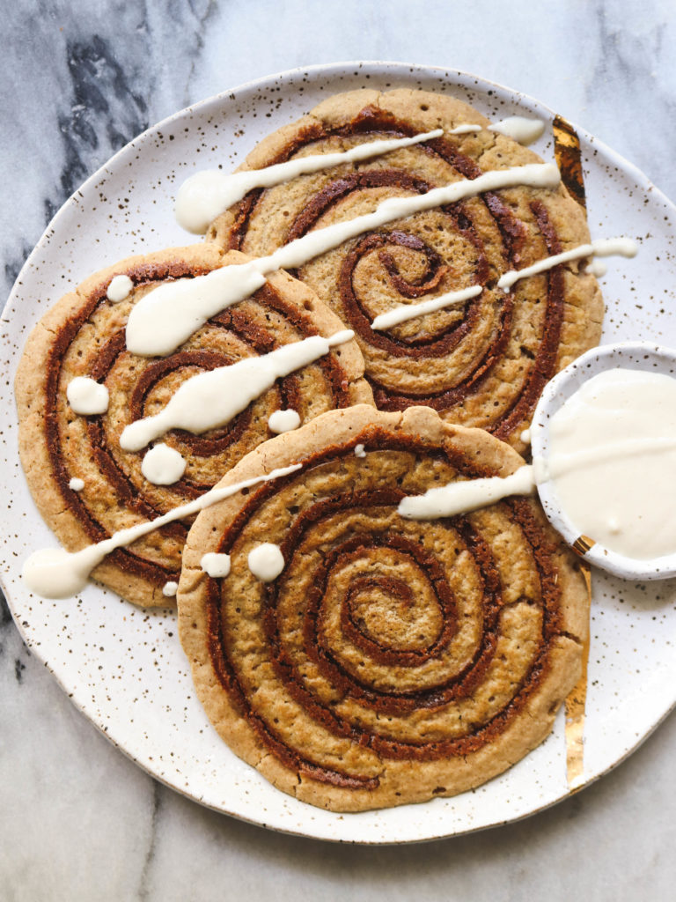

Cinnamon Bun Pancakes
1:15Hrs
4 Portions

Ingredients:
Glaseado
Remolino de canela
Pancakes
Preparation:
Para el Glaseado:
Step 1
Ponga el queso crema en un bol.
Step 2
Caliente la miel de maple en una cacerola pequeña a fuego lento hasta que comience a hervir a fuego lento, luego vierta sobre el queso crema y bata vigorosamente hasta que quede suave.
Step 3
Para el remolino de canela:
Dejar a un lado y mantener caliente.
Step 1
Derrita la mantequilla en una cacerola pequeña hasta que esté ligeramente dorada.
Step 2
Incorpora el azúcar moscovado y la canela; el azúcar puede aglutinarse y separarse de la mantequilla, no te preocupes.
Step 3
Batir en 1/4 taza de agua y dejar hervir a fuego lento, batiendo hasta que la mezcla se suavice.
Step 4
Cocine a fuego lento hasta que espese un poco, aproximadamente 2 minutos.
Step 5
Batir la nata y cocinar a fuego lento otros 2 minutos.
Step 6
Para los pancakes:
Transfiera a un tazón pequeño para enfriar (la mezcla se espesará a medida que se enfría) luego transfiera a una manga pastelera con una punta pequeña.
Step 1
Mezcle la harina, el azúcar, el polvo de hornear, el bicarbonato de sodio y la sal en un tazón grande.
Step 2
En un tazón mediano, mezcle el suero de leche, 3 cucharadas de mantequilla derretida, los huevos y la vainilla.
Step 3
Agregue la mezcla húmeda a la seca y bata hasta que esté combinada.
Step 4
Caliente una sartén antiadherente grande o una plancha de hierro fundido a fuego medio y unte con un poco de mantequilla derretida.
Step 5
Vierta aproximadamente 1/4 de taza de la masa en la sartén y extienda para hacer un círculo de 4 pulgadas.
Step 6
Cuando los panqueques comiencen a formar burbujas en la superficie, coloque el relleno de remolino de canela: comenzando en el centro de los panqueques, exprima el relleno en la parte superior en un remolino (tal como se ve en un bollo de canela normal).
Step 7
Continúe cocinando hasta que comiencen a aparecer burbujas más grandes, las superficies estén algo secas y cuajadas, y los fondos estén ligeramente dorados, aproximadamente 2 minutos; ajuste el fuego según sea necesario para que los fondos no se doren antes de que se asienten las tapas.
Step 8
Dé la vuelta y continúe cocinando hasta que se doren por el reverso, aproximadamente 1 minuto más.
Step 9
Para servir:
Transfiera los panqueques al horno para mantenerlos calientes mientras hace el resto de los panqueques.
Step 1
Apile 3 panqueques en cada plato, rocíe con un poco de glaseado de queso crema de arce y espolvoree con nueces.